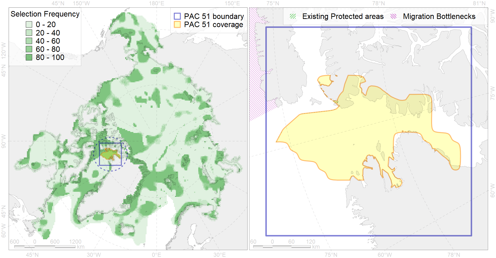

Region 51
Region 51
“ArcNet” scenario 33 achievement for region 51.
Use Accenter for advanced mode.

1
CFs inside of Region completely
20
CFs inside of Region at quarter
16
Complete-targets achievement by Region
29
Half-targets achievement by Region
| CF | Name | Target Achievement for Region | Proportion of Target Achievement in Region | Amount Proportion in Region |
|---|---|---|---|---|
| 5092 | Narwhal Smith Sound stock summer core distribution | 128.9% | 100.0% | 100.0% |
| 5081 | Narwhal Inglefield Bredning stock summer distribution | 113.3% | 100.0% | 99.9% |
| 5096 | Beluga and Narwhal wintering area in the North Water polynya | 101.9% | 99.7% | 98.2% |
| 7235 | Kelp forests of NW Greenland | 111.9% | 98.8% | 94.4% |
| 7257 | 7257 I I I 3 1 1 1 | 134.6% | 94.2% | 94.2% |
| 3020 | Marginal Ice Zone distribution in April in the Northern Canadian Archipelago LME | 697.9% | 97.7% | 83.8% |
| 9009 | polar bear of the KB (Kane Basin) subpopulation distribution | 229.1% | 96.3% | 76.8% |
| 3126 | polynya Baffin | 351.7% | 74.2% | 71.1% |
| 9027 | polar bear denning areas of KB (Kane Basin) subpopulation | 95.5% | 94.9% | 67.7% |
| 2037 | Ringed seal foraging areas in the Baffin Bay region | 248.5% | 89.1% | 62.9% |
| 2064 | Bearded seal concentration areas in Greenland | 245.2% | 68.6% | 60.6% |
| 8042 | Queen Elizabeth Island glacial termini | 196.6% | 75.0% | 60.5% |
| 6035 | Ivory gull (Pagophila eburnea) Canadian breeding colonies | 69.3% | 54.8% | 51.4% |
| 5114 | Narwhal summer feeding area in Kane Basin | 95.2% | 93.1% | 49.0% |
| 5091 | Narwhal Smith Sound stock summer distribution | 100.8% | 96.0% | 49.0% |
| 5006 | Beluga of the Baffin Bay winter distribution | 86.4% | 44.2% | 41.5% |
| 7148 | III.3. 1. Northwest Greenland shelf | 278.8% | 68.6% | 33.2% |
| 7150 | III.3.1.2. NW Greenland glacial troughs | 348.4% | 57.5% | 31.5% |
| 7149 | III.3.1.1. NW Greenland medium and low profile shelf | 259.8% | 64.8% | 30.2% |
| 7053 | cold corals of the High Arctic | 50.0% | 37.7% | 25.0% |
| 3033 | Marginal Ice Zone distribution in July in the Northern Canadian Archipelago LME | 99.0% | 61.7% | 24.3% |
| 5042 | Bowhead whale winter concentrations in the Baffin Bay | 42.1% | 28.6% | 20.2% |
| 6094 | 6094 PagophileburneCanadian breeding colonies | 40.8% | 23.4% | 18.2% |
| 7034 | North-western Greenland region | 66.5% | 40.6% | 15.1% |
| 6091 | 6091 Little auk breeding colonies of A. alle alle Greenland Canada | 28.3% | 20.2% | 14.1% |
| 6058 | Common eider (Somateria mollissima borealis) West Greenland breeding&moulting grounds | 16.8% | 16.7% | 11.3% |
| 3052 | Multiyear Ice distribution in September in the Baffin Bay LME | 53.9% | 12.9% | 10.8% |
| 3021 | Marginal Ice Zone distribution in April in the Baffin Bay LME | 79.4% | 12.2% | 9.7% |
| 7021 | Eastern Canadian Archipelago region | 85.6% | 14.2% | 8.5% |
| 7014 | Core of Canadian - Greenland Province of Arcto-Atlantic zoogeographical region | 101.9% | 14.2% | 7.8% |
| 6041 | Ivory gull (Pagophila eburnea) postbreeding grounds in the Canadian Arctic | 34.8% | 13.5% | 7.6% |
| 1003 | Atlantic Walrus Wintering Areas in Canada | 10.7% | 9.4% | 7.5% |
| 6031 | Little auk (Alle alle alle) breeding colonies in Greenland and Canada | 8.7% | 8.4% | 6.2% |
| 6008 | Brent goose (Branta bernicla hrota) Canadian High Arctic breeding&moulting grounds | 23.4% | 11.6% | 6.1% |
| 2014 | Bearded seal whelping areas in the north of the Canadian Archipelago | 23.1% | 14.8% | 5.9% |
| 3034 | Marginal Ice Zone distribution in July in the Baffin Bay LME | 23.6% | 9.7% | 5.9% |
| 2007 | Bearded seal whelping areas in the Baffin Bay | 20.9% | 7.3% | 5.6% |
| 5103 | Bowhead whale Baffin population spring-autumn distribution | 21.1% | 11.5% | 5.1% |
| 9011 | polar bear of the LS (Lancaster Sound) subpopulation distribution | 14.9% | 6.7% | 4.9% |
| 4074 | Fish zoogeography, Arctic Region, High-Arctic Shelf Province, Canadian-Greenland District (10A) | 63.6% | 9.4% | 4.9% |
| 6106 | 6106 Urilomvilomvibreeding colonies | 9.3% | 6.8% | 4.6% |
| 1002 | Atlantic Walrus Summer Distribution in Canada | 12.8% | 8.8% | 4.4% |
| 8040 | Greenland glacial termini | 0.3% | 0.2% | 4.2% |
| 5082 | Narwhal Jones Sound stock summer distribution | 6.2% | 6.0% | 3.9% |
| 2027 | Hooded seal foraging areas | 9.3% | 8.1% | 3.6% |
| 6099 | 6099 Rissa tridactyla tridactyla breeding colonies | 4.8% | 4.8% | 3.2% |
| 9002 | polar bear of the BB (Baffin Bay) subpopulation distribution | 9.3% | 7.7% | 3.0% |
| 6015 | Black guillemot (Cepphus grylle mandti) breeding grounds | 20.5% | 4.4% | 2.9% |
| 1011 | Atlantic Walrus haulouts in Nunavut and West Greenland | 2.7% | 2.7% | 2.8% |
| 2021 | Harp seal foraging areas in the Baffin Bay region | 10.7% | 5.0% | 2.6% |
| 6029 | Glaucous gull (Larus hyperboreus euceretes) breeding grounds | 16.2% | 3.7% | 2.6% |
| 4029 | Feeding area of the Arctic charr (Salvelinus alpinus), anadromous populations (F28) | 6.5% | 5.6% | 2.5% |
| 4053 | Range of the Fourhorn Sculpin (Myoxocephalus quadricornis) (F 45), Euro-Asian populations | 78.7% | 4.7% | 2.5% |
| 5112 | Arctic Cetaceans (beluga, bowhead, narwhal) winter habitats as predicterd by MIZ | 6.1% | 5.0% | 2.5% |
| 3051 | Multiyear Ice distribution in September in the Northern Canadian Archipelago LME | 12.1% | 5.8% | 2.3% |
| 6082 | Thick-billed murre (Uria lomvia lomvia) breeding colonies | 2.8% | 2.4% | 2.0% |
| 7215 | Canadian Archipelago kelp patches (2-9) | 3.9% | 2.2% | 2.0% |
| 4055 | Range of the Shorthorn Sculpin (Myoxocephalus scorpius) (F 46), American populations | 57.4% | 3.3% | 1.8% |
| 5041 | Bowhead whale summer concentrations in the Baffin Bay | 3.7% | 3.6% | 1.8% |
| 4046 | Range of the Thorny Skate (Amblyraja radiata) (F 3) | 23.1% | 4.3% | 1.7% |
| 7146 | III.2.2.1. Archipelago slope in Baffin Bay and Lancaster Sound | 28.1% | 3.7% | 1.5% |
| 4037 | Distribution of the Glacial cod (Arctogadus glacialis) (F34) | 16.2% | 3.9% | 1.5% |
| 4017 | Feeding/ migration area of the Greenland Shark (Somniosus microcephalus) (F1) | 5.7% | 3.3% | 1.2% |
| 4059 | Range of the Greenland Halibut (Reinhardtius hippoglossoides) (F 49) | 37.8% | 3.2% | 1.1% |
| 2061 | Ringed seal circumpolar foraging areas as predicted by MIZ distribution | 4.4% | 2.3% | 1.1% |
| 7134 | III.1.1. 1. Canadian Arctic Archipelago shelf | 9.4% | 1.6% | 0.8% |
| 4041 | Range of the Polar Cod (Boreogadus saida) (F35) | 4.8% | 1.8% | 0.6% |
| 6047 | Black-legged kittiwake (Rissa tridactyla pollicarius) breeding colonies | 0.9% | 0.8% | 0.6% |
| 2044 | Ringed seal whelping areas in the Baffin Bay region | 2.2% | 1.1% | 0.5% |
| 6083 | Thick-billed murre (Uria lomvia lomvia) wintering grounds | 1.9% | 1.3% | 0.5% |
| 7133 | III.1. Canadian Arctic Archipelago shelf and margin | 6.7% | 0.6% | 0.3% |
| 5115 | Narwhal wintering areas | 1.2% | 0.6% | 0.3% |
| 7137 | III.1.1.4. Canadian Archipelago glacial troughs | 3.3% | 0.5% | 0.2% |
| 4032 | Range of the Arctic skate (Amblyraja hyperborea) (F2) | 6.5% | 0.5% | 0.2% |
| 7136 | III.1.1.3. Archipelago inner shelf of low and medium profile | 2.3% | 0.4% | 0.2% |
| 9029 | polar bear denning areas of LS (Lancaster Sound) subpopulation | 0.1% | 0.1% | 0.1% |
| 9021 | polar bear denning areas of BB (Baffin Bay) subpopulation | 0.0% | 0.0% | 0.0% |
| 8036 | Salt marshes of the Baffin Bay LME | 0.0% | 0.0% | 0.0% |